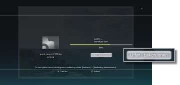
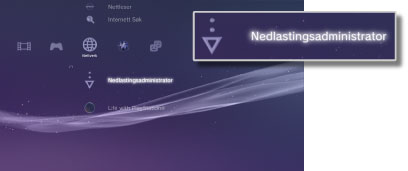

Nettverk > Nedlasting i bakgrunn
Nedlasting i bakgrunn
Med bakgrunnsnedlastning kan du utføre andre operasjoner mens du laster ned flere dataelementer eller data med stor filstørrelse. Denne funksjonen er kun tilgjengelig når [Utfør і bakgrunnen] vises på skjermen som vises under nedlastning.

Tips
- Det er ikke sikkert du kan utføre nedlasning i bakgrunn avhengig av hvile datatyper og antall dataelementer som blir lastet ned.
- Installasjonen kan kreve at du bruker nedlastede data som spill eller videofiler. Når nedlastningen er ferdig, vil dataene som krever installasjon vises som
 eller
eller  i hver kategori.
i hver kategori. - Nedlastning i bakgrunn er ikke tilgjengelig når det er uinstallerte data på harddisken.
- Hvis PS3™ systemet slåes av under bakgrunnsnedlastning, blir nedlastningsstatusen lagret. Nedlastningen vil restarte automatisk neste gang PS3™ systemet slåes på og kobles til internett.
- En bakgrunnsnedlastning vil stoppes midlertidig når noen av de følgende operasjonene blir iverksatt. Nedlastningen vil restartes automatisk når operasjonen er fullført.
- - Når du spiller en Blu-ray disk eller DVD
- - Når du bruker nettverksfunksjoner eller online-spill*
- - Når du starter PlayStation®2 programvareformat
- - Når du starter
 (Folding@home™)
(Folding@home™) - - Når du bruker stemme / videochat
- - Når du utfører en systemoppdatering
- - Når du justerer innstillingselementer under
 (Innstillinger)
(Innstillinger)
*
Når et spill går mot slutten, vil nedlastning i bakgrunn stoppes midlertidig.
Merknader
- Enkelte PlayStation®2 eller PlayStation®-programvareformattitler kan ha en annen prestasjon på PS3™-systemet enn på PlayStation®2 eller PlayStation®-systemene, eller fungerer muligens ikke ordentlig med PS3™-systemet.
- PlayStation®2 programvareformat kan dessuten ikke spilles av på enkelte PS3™-systemer. For mer informasjon, se [Typer plater som kan spilles av], besøk SCE-websiden for ditt område eller se dokumentasjonen som fulgte med PS3™-systemet.
Nedlastingsadministrator
Dette alternativet vises kun når nedlastning i bakgrunn blir utført. Når du kontrollerer nedlastningsstatus eller avslutter nedlastning av data som blir lastet ned fra  (Nettleser) eller
(Nettleser) eller  (PlayStation®Store). Velg
(PlayStation®Store). Velg  (Nedlastingsadministrator) under
(Nedlastingsadministrator) under  (Nettverk).
(Nettverk).

Kontrollerer nedlasningsstatus
Velg ikonet for data som du ønsker å kontrollere nedlastingsstatus for, trykk på  knappen, og velg deretter [Status] fra alternativmenyen.
knappen, og velg deretter [Status] fra alternativmenyen.
Avbryt nedlastingen
Velg det ikonet til de dataene som ønsker skal stoppe nedlastning, trykk på -tasten, og velg deretter [Avbryt] fra alternativmenyen. Etter at nedlastningen er blitt avsluttet, vil den bli rensket fra (Nedlastingsadministrator).
Opphold / gjenoppta nedlasninger
Velg det ikonet til de dataene som du vil at skal ha opphold i nedlastningen, trykk på -tasten, og velg deretter [Pause] fra alternativmenyen. For å gjenoppta nedlastning, trykk på -tasten igjen, og velg deretter [Gjenoppta] fra alternativmenyen.
Tips
- Hvis du har opphold nedlastningen, vil
 bli vist på skjermen.
bli vist på skjermen. - Hvis du stanser en nedlastning når du laster ned flere dataelementer, vil det neste dataelementet automatisk lastes ned.
Opphold i alle nedlastninger
Velg ikonet for alle nedlastninger, trykk på -tasten, og velg deretter[Pause Alt] fra alternativmenyen.
Gjenoppta alle nedlastninger
Velg ikonet for alle nedlastninger, trykk på -tasten, og velg deretter [Gjenoppta Alt] fra alternativmenyen.